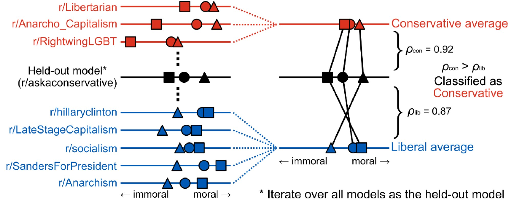
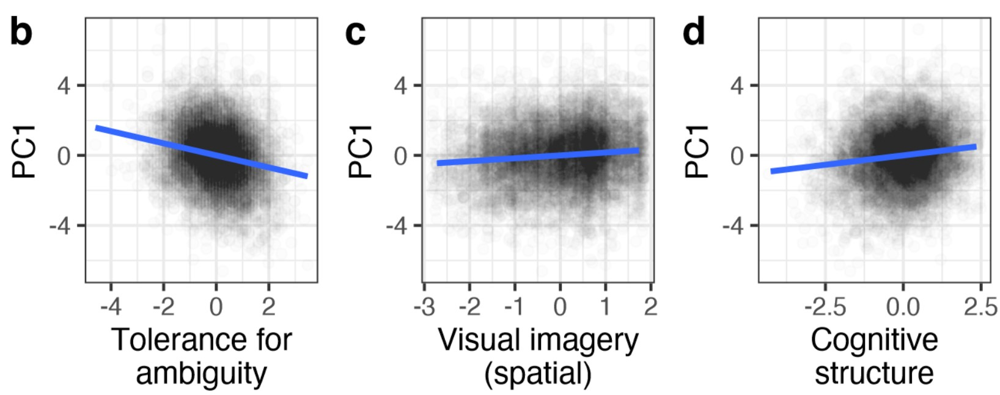
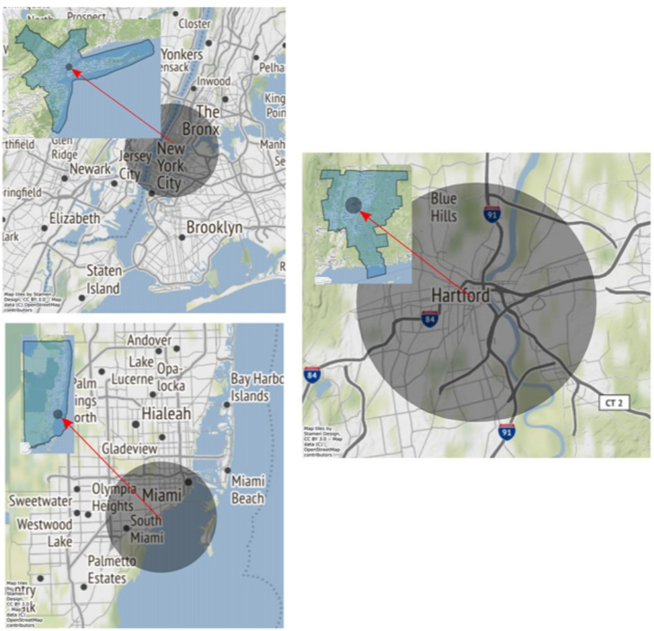
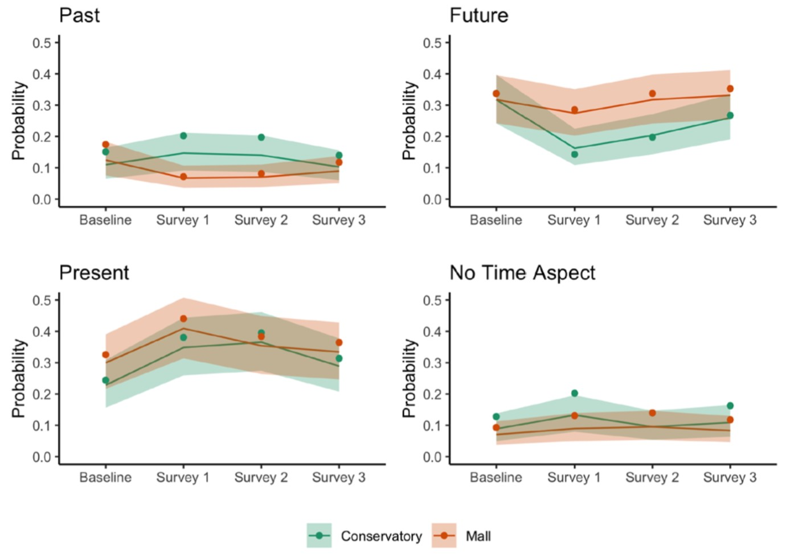
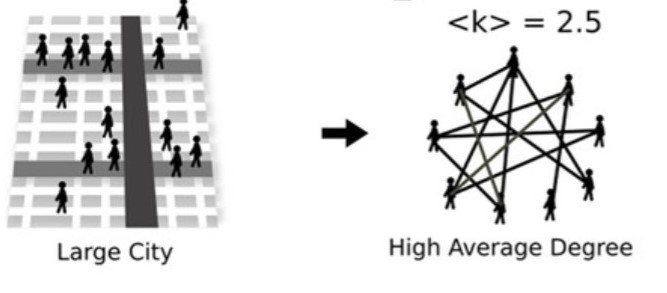

Publications

Moral consensus and divergence in partisan language use
Nakwon Rim, Marc G. Berman, Yuan Chang Leong
Revise & Resubmit
Preprint
Using word embedding models trained on large-scale real life online political discourse, we showed that partisans are reliably divided in moral association of words relating to issues.

Why Do Scientists Disagree?
Justin Sulik, Nakwon Rim, Elizabeth Pontikes, James Evans, Gary Lupyan
Revise & Resubmit
Preprint
We showed that researchers' stances on scientific questions are related not only to what kind of research they do, but also their cognitive traits.

Reply to Huth et al.: Cities are defined by their spatially aggregated socioeconomic networks
Andrew J. Stier, Kathryn E. Schertz, Nak Won Rim, Carlos Cardenas-Iniguez, Benjamin B. Lahey, Luís M. A. Bettencourt, Marc G. Berman
Proceedings of the National Academy of Sciences, 2022
Paper
We argued why cities are better understood as spatially aggregated socioeconomic networks.
This paper is a reply to a letter to Stier et al. (2021) listed below.

Environmental influences on affect and cognition: A study of natural and commercial semi-public spaces
Kathryn E. Schertz, Jillian E. Bowman, Hiroki P. Kotabe, Elliot A. Layden, Jenny Zhen, Tanvi Lakhtakia, Muxuan Lyu, Olivia A. Paraschos, Stephen C. Van Hedger, Nak Won Rim, Kathleen D Vohs, Marc G. Berman
Journal of Environmental Psychology, 2022
Paper
We showed how people's thoughts and affects fluctuate differently in natural and commerical semi-public spaces.

Evidence and theory for lower rates of depression in larger US urban areas
Andrew J. Stier, Kathryn E. Schertz, Nak Won Rim, Carlos Cardenas-Iniguez, Benjamin B. Lahey, Luís M. A. Bettencourt, Marc G. Berman
Proceedings of the National Academy of Sciences, 2021
Paper
We showed that depression rate scales sublinearly with city population size, suggesting the denser social networks in cities (which scales superlinearly with population) may serve as a buffer for depression.